The coat of arms for the Holt family have changed over the generations by marriage. The Holt of Stubley and Holt of Gristlehurst arms are displayed below. In five direct descents the Gristlehurst Holts married into Knightly families. The coat of arms are described as:–
Heraldry of the Holt Family
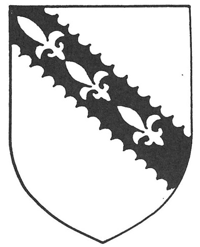
The Holt of Stubley
ARMS Argent, on a bend engrailed Sable three fleurs-de-lys of the field.
Robert Holt, Knight of Stubbeley Halle,
Hundersfeld. Anno Domini 1472. In Shire Hall, Lancaster Castle.
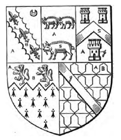
The Holt of Gristlehurst
ARMS quarterly of five:
FIRST argent on a fesse engrailed sable; three fleurs-de-lis argent (HOLT of Stubley)
SECOND argent, three boars two and one sable, each with a piece of gristle (GRISTLEHURST)
THIRD argent, a chevron sable between three towers gules (ABRAHAM)
FOURTH ermine, on a chief indented azure two lioncels rampant or
FIFTH vair argent and azure; a bend gules (MANCETTER of Warwick)
from the Lancashire 1533 Visitation
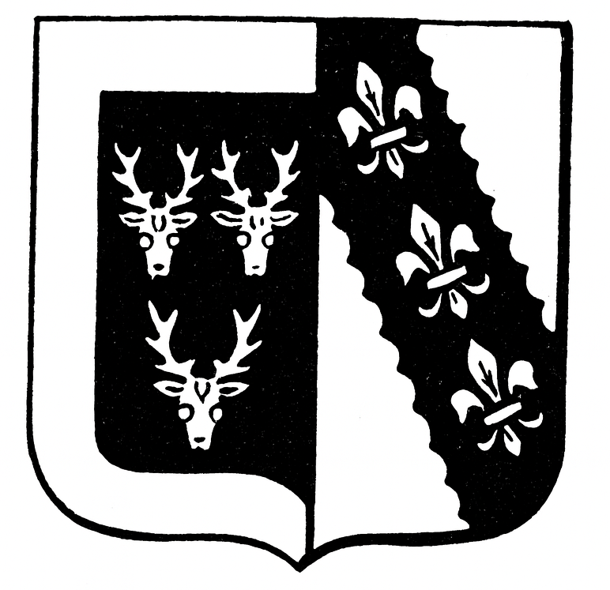
Cavendish impaling Holt
Arms of Cavendish of Doveridge sable, with a bordure argent,
three stag's head caboshed,
of the second Arms of Holt,
of Stubley and Castleton, argent, on a bend engrailed sable, 3 fleur-de-lis of the first.
Impalement is the standard heraldic way to show a marriage. Dexter (left side of the shield as viewed) is the
husband’s arms and Sinister (right side) is the wife’s paternal arms. Thus meaning a Cavendish man married
a Holt woman, and their arms were displayed together on one shield, split vertically.
From Corry 1825.
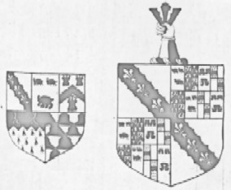
Holt of Stubley
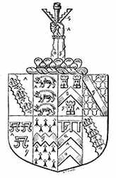
Holt of Gristlehurst
Names of Quarterings (Visitation of Suffolk 1561):
1: Howlte; 2: Gristlehurst; 3: Sumpter; 4: Brockhole; 5: Roos; 6: unknown; 7: unknown; 8: Howlte
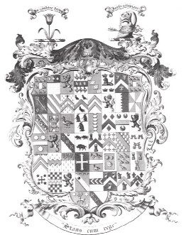
Chadwick including Holt quarterings 1808
27. Holt of Shevington and Ince, argent, on a bend engrailed sable 3 fleurs‑de‑lis argent
28. Gristlehurst of Gristlehurst, argent 3 boars statant sable with gristles
29. Sumpter of Colchester, argent, a chevron sable between 3 triple‑towered towers gules
30. Brockhole of Great Stamford, or, a chevron between 10 cross‑crosslets gules
31. Mancester of Mancester, vairic a bend gules
32. Roos of Radwinter and Asheldam, argent 3 water bougets gules
33. Albini Baron of Belvoir, argent 2 chevronels gules a file of 3 points azure
34. Asheldam of Asheldam, ermine on a chief indented azure 3 lions rampant or
Chadwick of Healey, Ridware, New Hall, Callow, Leventhorp. From Corry 1820
in counties of Lancaster, Stafford, Warwick, Derby and York.
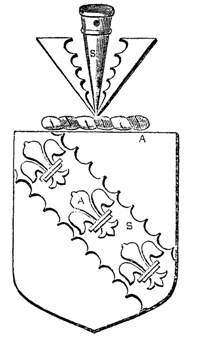
Robert Holt of Stubbley
ARMS Argent (ar), on a fesse engrailed Sable (sa) three fleurs-de-lis of the field (ar)
The Visitation of London 1633–4 by the mark of Lawrence Holt. The earliest ancester mentioned was
one of the Judges of the Common Pleas and the same arms shown in the Lancashire 1533 Visitation
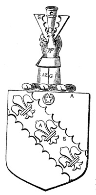
Grislehurst, Cople and London
The Visitation of London 1633–4, Langborne Ward
William Holt of Grislehurst, Edward Holt of Cople, and Alexander Holt of London, Goldsmith
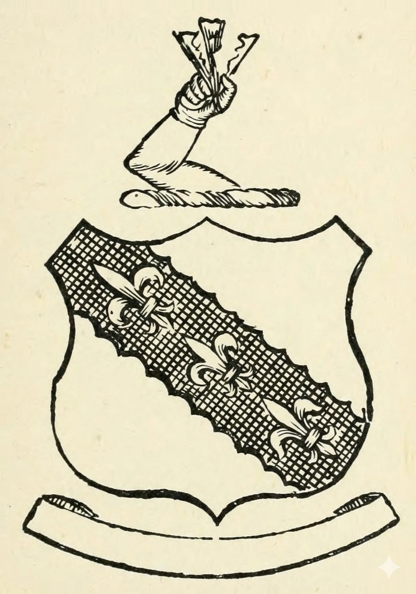
James Maden Holt
From Debrett's House of Commons 1867 in the Members of Parliament section.
ARMS: Argent, on a bend engrailed Sable three fleurs-de-lys of the first.
CREST: A dex. arms embowed and embraced ppr., in the hand a pheon ppr.
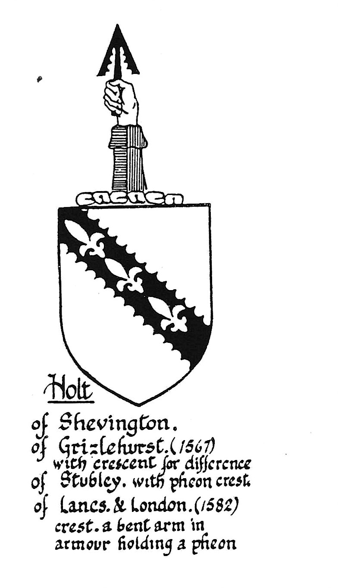
Holt of Shevington
From A Lancashire Family, Lancashire magazine of the Lancashire Family History
and Heraldry Society Vol.9 Feb 1988, No1.
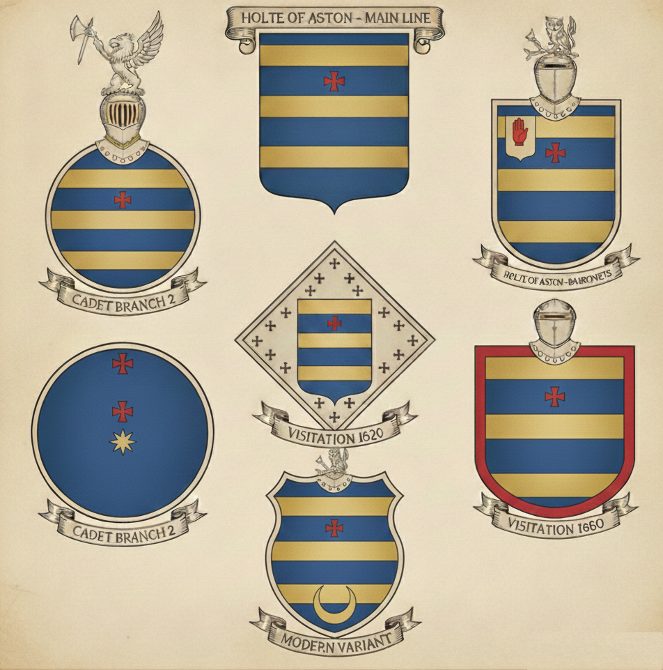
Holte of Aston Hall
A distinct family from the Holts of Stubley
Main Line held by Sir Thomas Holte (1st Bart) |Simple shield with Cross-Formée
Cadet 1 held by Edward Holte (d. 1643) | Crescent (Second son mark)
Cadet 2 held by Simon Holte of Nechells | Bordure (Border) or extra crosses
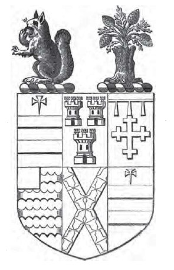
Holt and Fisher
ARMS: Quarterly of six.
1. Azure, two bars and in Chief a cross palee fitchée or.
2. Gules, three towers argent.
3. Azure, a crosslet or, in chief, a label of three points throughout argent.
4. Argent, four bars engrailed and a canton gules.
5. Or, a saltire vair.
6. As first.
From the Visitation of Warwickshire
Arms: Azure, a fesse or fretty sable between three fleurs-de-lis or.
Crest: Squirrel sejant gules cracking nut or, collared/chained gold.
Motto: "Gardez le foy."
Lee's Heraldica Lancastria original arms manuscript:
view here.
The Right Honourable Robert Durning Holt, 1893: arms.
Heraldry Structure
To understand a little more about heraldry and the Cadet differences look at the summary.
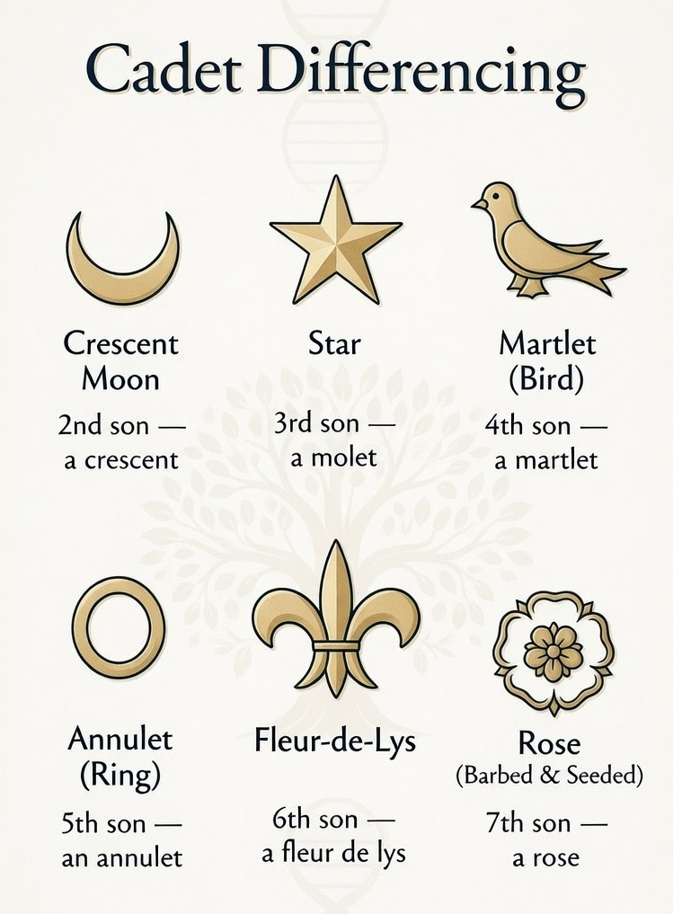
The Tinctures (colours in hearaldry) OR (gold); Sa - SABLE (Black); ARG - ARGENT (Silver); AZ - AZURE (Blue); GU - GULES (Red);
Engrailed (engr.) refers to a specific type of partition line or edge style on an ordinary (like a bend, fess, chief, bordure, etc.). It means the line is scalloped or indented with small semicircular notches pointing outward (like a wavy edge with rounded "teeth").
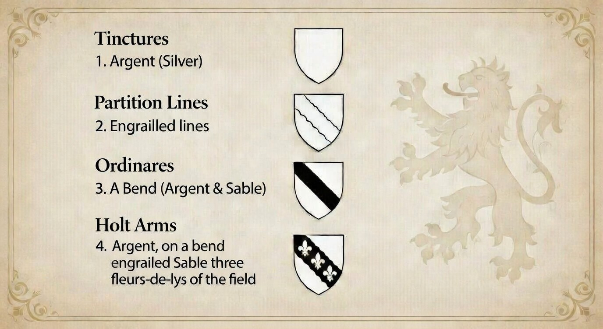
Tinctures are the basic colors and metals used in heraldry, consisting of the two metals (or for gold/yellow and argent for silver/white) and the five principal colors (azure for blue, gules for red, sable for black, vert for green, and purpure for purple), which provide the foundational palette for a coat of arms and follow strict rules of contrast.
Partition lines are the lines that divide a shield into different sections or areas, which may be straight (such as per fess or per pale) or varied (such as engrailed, invected, wavy, or indented), allowing the field to be split into multiple tinctures or creating decorative borders within the design.
Ordinaries are the primary geometric charges or simple shapes placed upon the shield, such as the bend, fess, pale, chevron, chief, cross, or saltire, which form the main structural elements of many coats of arms and are often the most prominent feature in simpler heraldic designs.
The coat of arms for HOLT Argent, on a bend engrailed Sable three fleurs-de-lys of the field is described in plain English as follows:
A silver (white) shield with a broad diagonal band (called a Bend) running from the upper left to the lower right, the edges of this band are engrailed (scalloped or indented with small semicircles pointing outward). The bend itself is black (sable), and upon this black bend are placed three argent/silver/white fleurs-de-lys (the same colour as the field).
In visual terms:
- The main background of the shield is plain white/silver.
- A thick black diagonal stripe crosses it from top-left to bottom-right.
- The edges of that black stripe have a wavy, scalloped (engrailed) outline.
- Three white/silver fleurs-de-lys are evenly spaced along the black bend.
This is a classic example of a simple yet distinctive heraldic design, where the black bend acts as the main ordinary, the engrailed edge adds decorative distinction, and the three fleurs-de-lys serve as the principal charges.
Alphabetical Dictionary of Coat of Arms – HOLT Entries (1874)
 Arg. on bend engr. az. three fleurs-de-lis or. or HOLT or HOLTE, Suffolk.
Arg. on bend engr. az. three fleurs-de-lis or. or HOLT or HOLTE, Suffolk.
 Arg. on a bend three fleurs-de-lis of the first. HOLT, Swaston, co. Cambridge. MELNEHOUSE, V.
Arg. on a bend three fleurs-de-lis of the first. HOLT, Swaston, co. Cambridge. MELNEHOUSE, V.
 Arg. on a bend engr. ga. three fleurs-de-lis of the first. HOLT, co. Lancaster; and London; granted 18 June 1582.
HOLT, Lord Chief Justice 1689. HOLT, Grestelherrst, co. Lancaster, V. HOLT, Twyford and Portsmouth, co. Hants.
Arg. on a bend engr. ga. three fleurs-de-lis of the first. HOLT, co. Lancaster; and London; granted 18 June 1582.
HOLT, Lord Chief Justice 1689. HOLT, Grestelherrst, co. Lancaster, V. HOLT, Twyford and Portsmouth, co. Hants.
 HOLT, Stubbylee, co. Lancaster. MELHUISH, co. Devon; and Taunton, co. Somerset. MILNEHOUSE, V. SALE, Barrow, co. Derby.
HOLT, Stubbylee, co. Lancaster. MELHUISH, co. Devon; and Taunton, co. Somerset. MILNEHOUSE, V. SALE, Barrow, co. Derby.
 Arg. on a bend engr. sa. three fleurs-de-lis or. HOLT or HOLTE, Suffolk.
Arg. on a bend engr. sa. three fleurs-de-lis or. HOLT or HOLTE, Suffolk.
 Or two bars az. in chief three crosses formy gu. WINSTANLEY… quartering HOLT.
Or two bars az. in chief three crosses formy gu. WINSTANLEY… quartering HOLT.
 Or a lion ramp. sa. betw. three mullets gu. De Wolvey; quartered by HOLTE.
Or a lion ramp. sa. betw. three mullets gu. De Wolvey; quartered by HOLTE.
 Arg. a lion ramp. gu. between six pheons sa.; quartered by HOLTE.
Arg. a lion ramp. gu. between six pheons sa.; quartered by HOLTE.
 Az. two lions pass. or… quartered by HOLTE.
Az. two lions pass. or… quartered by HOLTE.
 Gu. two lions pass. arg. A label or. STRANGE; quartered by HOLTE.
Gu. two lions pass. arg. A label or. STRANGE; quartered by HOLTE.
 Arg. a bend engr. betw. two cotises sa. CLOBERY; quartered by HOLTE.
Arg. a bend engr. betw. two cotises sa. CLOBERY; quartered by HOLTE.
 Arg. on a bend gu. three mullets or… quartered by HOLTE.
Arg. on a bend gu. three mullets or… quartered by HOLTE.
 Arg. on a bend engr. betw. two inkmolines sa. three fleurs-de-lis arg. HOLT, Bishham Hall.
Arg. on a bend engr. betw. two inkmolines sa. three fleurs-de-lis arg. HOLT, Bishham Hall.
 Or two crows sa. CORBETT; quartered by HOLTE.
Or two crows sa. CORBETT; quartered by HOLTE.
 Barry engr. of six arg. and gu.; quartered by HOLTE.
Barry engr. of six arg. and gu.; quartered by HOLTE.
 Chevronelly of six gu. and erm.; quartered by HOLTE.
Chevronelly of six gu. and erm.; quartered by HOLTE.
 Paly arg. and gu.; quartered by HOLTE.
Paly arg. and gu.; quartered by HOLTE.
 Gu. three castles or. CASTELL; quartered by HOLTE.
Gu. three castles or. CASTELL; quartered by HOLTE.
 Arg. a chev. betw. three squirrels sejant gu. cracking nuts or. Sr. John HOLT.
Arg. a chev. betw. three squirrels sejant gu. cracking nuts or. Sr. John HOLT.
 Arg. a chev. plain betw. three saltires engr. gu. HOLT, Brereton, co. Chester.
Arg. a chev. plain betw. three saltires engr. gu. HOLT, Brereton, co. Chester.
Supplement to the Encyclopaedia Heraldica – HOLT Entries
 HOLT, az. three fleurs-de-lis ar.
HOLT, az. three fleurs-de-lis ar.
 Holt or Holte (Twyford & Portsmouth), Hampshire.
Holt or Holte (Twyford & Portsmouth), Hampshire.
 Holt (Lanc.) ar. on a fesse engr. sa. three pheons arg.
Holt (Lanc.) ar. on a fesse engr. sa. three pheons arg.
 Holt per pale az. and gu. two bars or.
Holt per pale az. and gu. two bars or.
 Holte (Erdington Hall, Warw.) Arms as Holt of Aston.
Holte (Erdington Hall, Warw.) Arms as Holt of Aston.
 Holte, az. two bars or, between them a barrulet environed with an annulet or; in chief a cross pattée fitchée or.
Holte, az. two bars or, between them a barrulet environed with an annulet or; in chief a cross pattée fitchée or.
 Holte, two chevrons, a label of three points in chief.
Holte, two chevrons, a label of three points in chief.